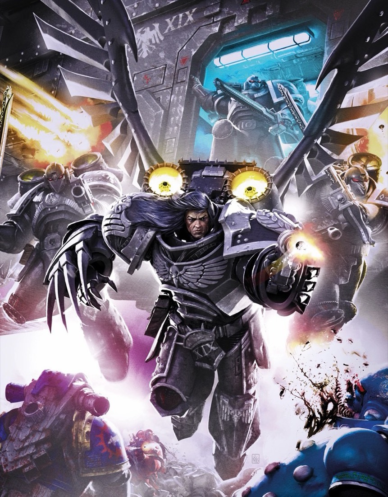

Corvus Corax
| Corvus Corax | |
|---|---|
| Primarch of the XIX Legion | |
 Votive image of the Raven Lord leading the Legion into the Isstvan campaign | |
| Titles | The Raven Lord; the Liberator; the Deliverer; the Shadowed Lord; Chooser of the Slain |
| Allegiance | Emperor of Mankind (Loyalist) |
| Legion | XIX, the Raven Guard |
| Homeworld | Lycaeus, moon of Kiavahr, renamed Deliverance |
| Created | Beneath the Himalazian mountains, Terra, late M30 |
| Discovered | 922.M30, by the Emperor, alone |
| Status | Missing since the early years after the Heresy; last seen leaving Deliverance for the Eye of Terror |
| Family | |
| Relatives |
|
| Arms | |
| Wargear | Sable Armour; Korvidine Pinions; Lightning Talons; Talionis; Wrath and Justice |
| Known for | The liberation of Lycaeus; stealth warfare; survival of Isstvan V; his hunt for the Traitors |
Corvus Corax, called the Raven Lord, the Liberator and the Shadowed Lord, was the Primarch of the XIX Legion of the Space Marine Legions, the Raven Guard. He was raised in the dark among the slaves of the prison moon Lycaeus, which he freed from the technocratic guilds of Kiavahr. The Emperor found him there in 922.M30, saw that he needed no rescuing and left him to finish the work. His Legion became the Great Crusade's masters of stealth, infiltration and lightning strikes.[1]
Corax was one of the three loyalist primarchs sent to Isstvan V in the first wave, and he led the survivors of the Raven Guard out of the Drop Site Massacre after weeks of flight. He remade the Legion with gene-stock recovered from the Emperor's hidden laboratories beneath the Imperial Palace, and he later ordered the death of the flawed warriors that stock had produced.[2][3]
After the Heresy he divided his Legion under the Codex Astartes, shut himself in a tower for a year and then left Deliverance for the Eye of Terror. Raven Guard tradition holds that he went to hunt the Traitor primarchs. His last recorded words were "never more".[3][4]
Early life
[edit]Lycaeus
[edit]The capsule of the infant primarch came to rest in a lightless chamber far below the surface of Lycaeus, a barren moon of the planet Kiavahr. Kiavahr was a technologically advanced world whose city-sized manufactoria were fed by minerals mined on the moon by slaves. The slaves included criminals, political opponents and workers who had failed their quotas. A mining crew following a seam found the child within minutes of his waking, and hid him from the overseers. Some in the Legion have taken the timing as a sign of a greater purpose.[1]
Corax grew to maturity in a very short time. The slaves named him with their word for "saviour" or "deliverer". He was created with a wealth of knowledge, but he had much to learn, and his protectors taught him to wait. Many were radicals who held that human beings had a dignity the guilds denied. They counselled him against open defiance and for patience, observation and planning. In time he discovered his own gifts. By willing an observer not to see him, he could move unnoticed through the sight of his guards. The ability did not defeat auspexes and other machines, which saw him as clearly as ever, but against a human mind it worked.[1]
He led a campaign that bled the prison authorities dry. Small cells of freedom fighters stole weapons and ammunition and sabotaged key systems so that they would fail on the day he chose. When it came, he led the uprising and took the prison. The killing was heavy, and not all the slaves were innocent, for many were convicted murderers. Corax made use of their strength and overlooked their pasts on condition that they never repeat their crimes.[1]
The Emperor
[edit]In 922.M30, in the aftermath of the uprising, the Emperor came to Lycaeus with no expeditionary fleet. He spoke with Corax for many hours and left the next day. What was said is unrecorded. Some later scholars, aware of how events unfolded, believe the Emperor told Corax of the nature of the Warp and the darkness to come, and that this is why Corax later seemed to have been forewarned of the Warmaster's treachery.[1]
The Emperor left him to finish the liberation of Kiavahr with the weapons he had. Those were a store of atomic charges and mining explosives that the guilds had hidden on the moon, believing the slaves would never find them. Corax used them, and the tech guilds fell. Kiavahr joined the Imperium with the Raven Guard's own artificers in its manufactoria. Lycaeus was renamed Deliverance.[1]
Great Crusade
[edit]Under the raven's banner
[edit]The Great Crusade was a century old when Corax took command. The Legion he found was a cold, brutal formation drawn from the Xeric tribes of Terra, used for oppression, repression and occupation. Corax saw in some of its officers the same character as the slavers of Lycaeus. He purged much of that character, and replaced or reassigned its senior officers, including the Legion Master, Arkhas Fal, who had held command for thirty years. He imposed the way of war he had perfected on Lycaeus, the union of stealth, guile, vigilance and speed, and set it down in a series of "axioms" for the Legion to follow.[1][5]
The axioms were famous. "The First Axiom of Victory is to be other than where the enemy desire you to be. The First Axiom of Stealth is to be other than where the enemy believes you to be." He is said to have beaten Roboute Guilliman three times in the Ultramarines' notoriously exacting strategic simulations, using troop types his brother had never faced, among them the forerunners of the Legion's Moritat. After the third loss Guilliman adjusted his tactics and Corax never beat him again.[5]
The Legion's techmarines drew on the Kiavahran artificers' secret lore to make the Shadowhawk gunship, a Thunderhawk pattern nearly invisible to augurs, and the Whispercutter, a gravitic open-framed flyer that could land ten Legionaries in a war zone in silence. Kiavahr's guild-artificers were granted the Legion's protection, and it has been speculated that they would otherwise have been declared outcast by the Mechanicum for their unorthodox practices.[1]
Isstvan III and Gate Forty-Two
[edit]
In the Great Crusade the Raven Guard's most notable campaign was the compliance of the Isstvan System, in the northern reaches of the Ultima Segmentum. Corax led the 27th Expeditionary Fleet. Isstvan III was a cohesive, industrial human world with a history of independence, and it rejected the Imperial Truth. The War Council ordered the Legion not to use overwhelming force, which would have spoiled a valuable prize. The Raven Guard struck without warning, destroyed Isstvan III's military infrastructure and took its seats of government. The last aggressive faction was broken at the Redarth Valley, and an Isstvanian delegation surrendered before Corax. It was a model of the Legion's methods.[1]
A harder lesson came at Gate Forty-Two. When Horus was named Warmaster, the Legion was recalled from operations on the Ghoul Stars and ordered into the line under his command, for the reduction of the Aukum-Sothos Cluster. The cluster, which the Luna Wolves had brought to compliance in the opening years of the Crusade, had seceded in a mass psychosis caused by xenos parasites, and was controlled by a group of hosts called the Unsighted Kings. Horus's plan was a conventional assault. The Legion's stealth tactics were of little use, and its heavy losses at the Gate were remembered as the great reverse of its history, and as a warning of what would happen at Isstvan.[1]
Horus Heresy
[edit]Isstvan V
[edit]In the Drop Site Massacre, the Raven Guard struck the Traitors' right flank, the Iron Hands the centre and the Salamanders the left. The odds seemed even, thirty thousand Traitors against forty thousand loyalists. Horus knew the drop site, and the Traitors fell on the loyalists as they landed. Corax and Vulkan counselled Ferrus Manus not to pursue the retreating enemy, and were ignored. The second wave then opened fire on the loyalists. The Raven Guard had a better chance of survival than the Salamanders, but still lost heavily.[2]
On the field Corax met Lorgar and the Word Bearers, with Kor Phaeron and Erebus at the front, and the daemon-possessed Gal Vorbak under Argel Tal. Corax cut through the Gal Vorbak and then went through the Word Bearers' ranks until Lorgar himself, against the advice of his officers, came forward to fight him. The two fought, and Corax was winning. Konrad Curze then appeared. Corax broke off and withdrew. In later years Corax reflected that what he had felt was fear: not of death, but because he understood that he might as easily have landed on Nostramo as on Lycaeus.[2][3]
The flight
[edit]
Corax survived a crash and regrouped his Legion's survivors. He found that a large part of it had been destroyed, over seventy-five thousand Legionaries in all. They took to the highlands and hid, ambushing an Iron Warriors armoured column before it could report them. Thirty days after the landing, Corax went alone to scout the drop site, using his gift to avoid detection. Officially it was a reconnaissance. In truth he searched the Urgall Plateau for the bodies of his sons, and did not find them.[3]
The survivors held out for ninety-eight days before they were driven to a last stand against a mountainside and a salt plain, facing the World Eaters under Angron. A small group escaped, and Corax with them. A critically wounded Corax was carried back to Terra in a stasis tube. When he had been healed in body but not in spirit, he returned to Deliverance to rebuild.[3]
The Emperor's gift
[edit]Corax, obsessed with revenge against Horus, asked the Emperor for help in remaking his Legion. Against the objections of Rogal Dorn and Malcador the Sigillite, he spoke with the Emperor in a psychic communion. The Emperor was then occupied in the Warp and in the remnant of the Webway project beneath the Palace, which had been damaged by Magnus the Red's intrusion. He told Corax the truth of the Imperial Webway project, of Chaos, and of the Heresy, which was in reality a campaign by the Chaos Gods to enslave Mankind with Horus as their instrument. He revealed that the genetic stock of the Primarch Project had not been destroyed and still lay dormant.[3]
Corax, with Raven Guard squads, Mechanicum specialists and a number of Custodians as overseers, descended into the laboratories beneath the Himalazian mountains and secured the stock against traps laid by the Emperor himself. On Deliverance, the Chief Apothecary Vincente Sixx and Magos Genetor Nexin Orlandriaz extracted from the undiluted genetic material a gene-seed purer than the Legion's own. It was implanted into five hundred Aspirants on an accelerated schedule. The new warriors lacked experience but were strong. Some were not stable, and Corax later learned the cost.[3]
Disappearance
[edit]Corax could not forget the "growling, monstrous" flawed warriors that had been made from the Emperor's stock. By the time he had rebuilt the Legion, the Heresy was over and Guilliman's Codex Astartes required that it be divided. Corax saw that the reform was necessary, though not welcome, and divided what remained into the Chapters of the Second Founding. He then went in person to the remaining aberrant Legionaries and administered the Emperor's Peace, praying for their souls and for his own.[3]
Afterwards he shut himself in the Ravenspire, the tower of his fortress on Deliverance, and for a year appealed to the Emperor, now on the Golden Throne, for mercy. Nobody knows whether he received it. A year to the day after he locked the door he walked out, left Deliverance and set a course for the Eye of Terror. His last recorded words were "never more". He has not been seen in Imperial space since.[3]
Earlier Raven Guard summaries recorded only that he had gone away, and left the question of his destination open. The accepted account, set down from later Chapter archives, is that he went into the Eye to hunt the Traitor Legions and their masters, and began with Lorgar of the Word Bearers.[4]
The hunt for Lorgar
[edit]On the daemon world of Sicarus in the Eye of Terror, which the Word Bearers took after the Great Scouring, the Dark Apostle Kalta-Ar began to build a monument to his gene-father. Something began to kill his Word Bearers. His slaves said it was a shadow that rose up and tore them apart. When it came for him he withdrew to Lorgar's sanctum and begged for help.[4]
The Lorgar that emerged was changed: a golden-skinned giant in a cloak of throbbing runes, with a spiked mace. Corax had changed too. The warp-energies of the Eye had stripped from him the mortal facade the Emperor had given his sons, and he had become a being of living shadow and blades, able to scatter into a flock of ravens. The two fought across the great temple of the Ruinous Powers, and again Corax had the better of it. Lorgar broke away into an inner chamber and sealed it behind him. On the black door, two runes appeared: "Deny Fate". Corax swore that even if it took millennia he would hunt the Urizen down.[4]
Legacy
[edit]The Raven Guard, and the Chapters derived from them, still revere the Raven Lord as the great liberator of the Imperium, and tell the story of his return. They have kept his axioms, and Raven Guard captains fight by them. In the Era Indomitus Chapter loremasters say that Corax is not dead and that his hunt is not over.[6]
Character and abilities
[edit]Corax presented a striking figure when he chose to be seen. His skin was alabaster white, his hair black to the shoulder and his eyes solid black. He kept a monastic austerity and a distaste for show. He had a strong sense of justice and a stronger distrust of unchecked power, born of his slavery, and he distrusted the Legion's Terran officers for the same reason. His liberation of Lycaeus was planned over years. He had patience, an eye for the weakness of an enemy, and a refusal to waste lives.[1][5]
His psychic ability allowed him to turn aside the notice of living observers. In the Eye of Terror it was transformed into a more elemental capacity for shadow. Of the primarchs he was one of the most formidable in single combat, as his victory over Lorgar showed twice.[4]
Wargear
[edit]The Sable Armour was made for him by the Emperor's own artificers. It was a suit of artificer plate that hid his signature and could disrupt enemy sensors and vox within a short distance. His jump pack, the Korvidine Pinions, was an artefact of the Age of Technology that he modified to his own requirements. It was thought lost at Isstvan, but the Raven Guard techmarine Stradon Binalt recovered it and secretly repaired it, and presented it to him after the Battle of Ravendelve. He carried artificer-made Lightning Talons, a pair of archaeotech pistols known as Wrath and Justice (names given by the Legion, not by him), and Talionis, a powered two-headed bullwhip of Kiavahran manufacture, a reminder of the tyranny that had held him. He also carried frag grenades and shroud bombs.[1][3]
See also
[edit]References
[edit]- ^ a b c d e f g h i j k l Liber Primarchus (M32, revised M41). Administratum Archive, Terra.
- ^ a b c Chronicles of the Heresy, vol. 2, "Massacre" (sealed). Logos Historica Verita, Terra.
- ^ a b c d e f g h i j The Raven's Flight (c. 020.M31). Ravenspire, Deliverance.
- ^ a b c d e Annals of the Eye of Terror (rev. 990.M41). Raven Guard Chapter archive.
- ^ a b c Axioms of the Legiones Astartes (attributed to Corvus Corax, M31). Ravenspire, Deliverance.
- ^ Records of the Indomitus Crusade (ongoing). Office of the Lord Commander.